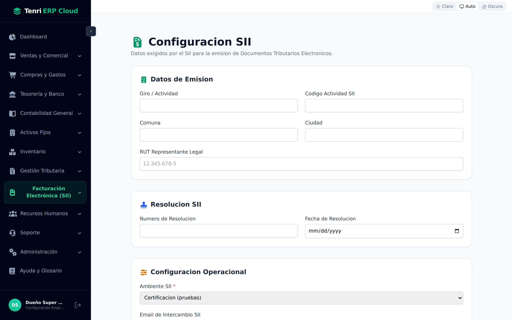
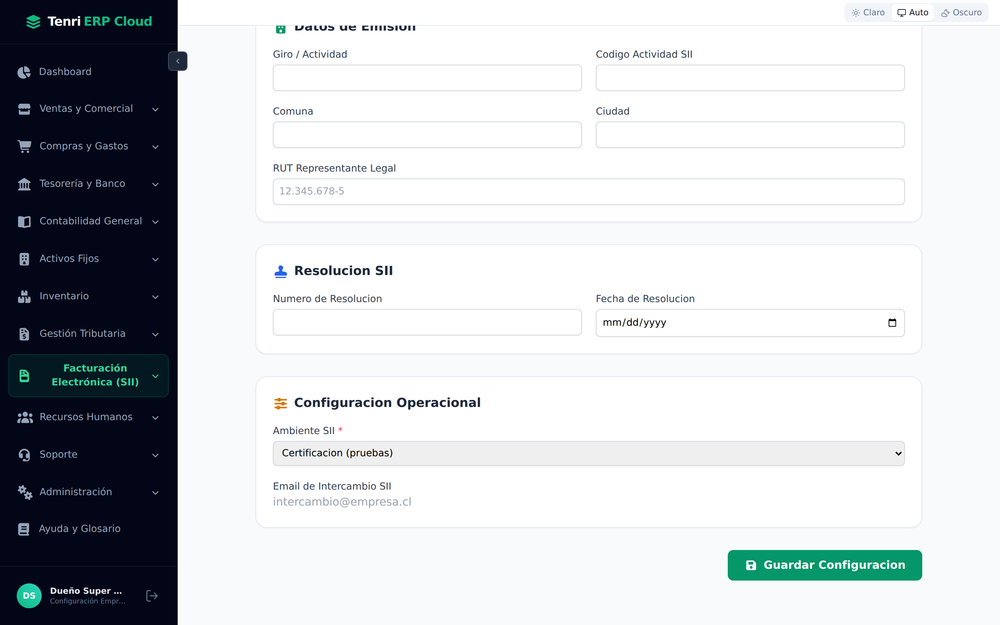
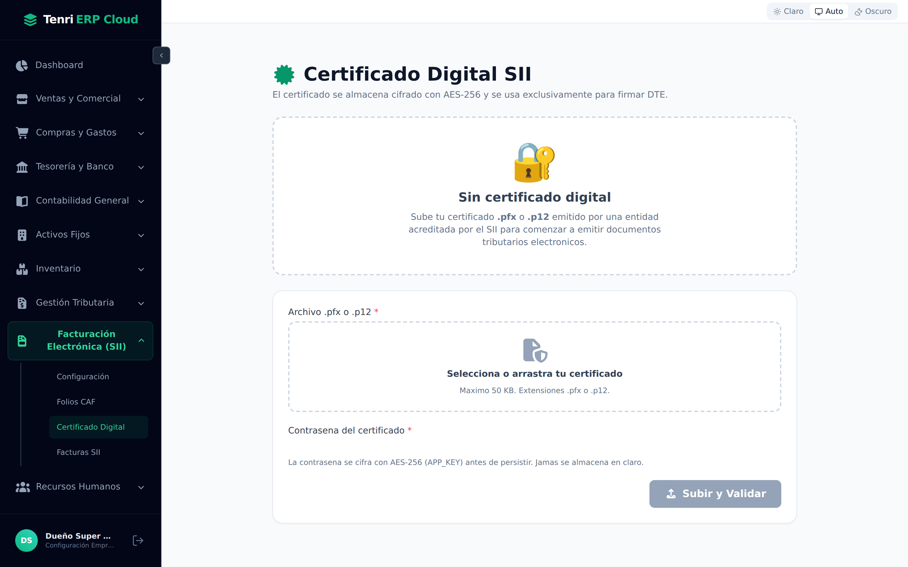
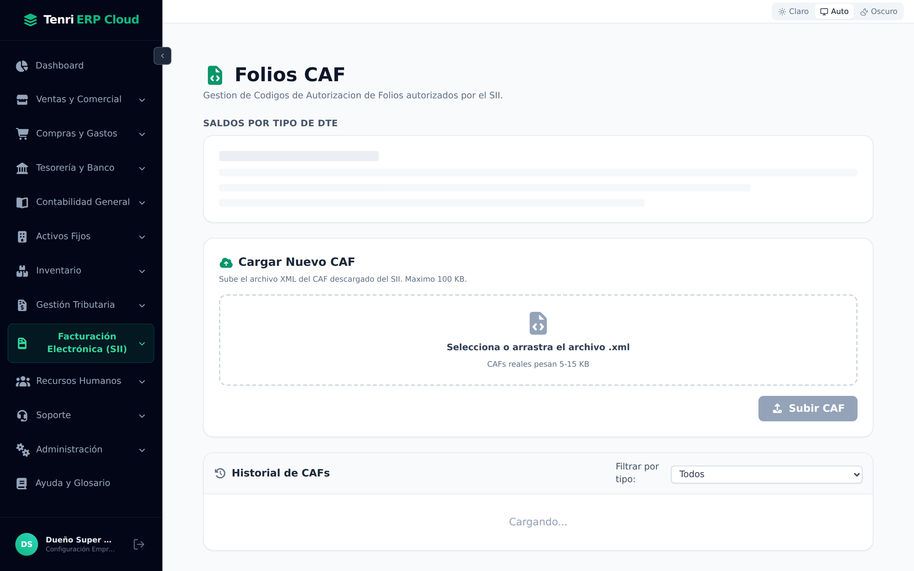
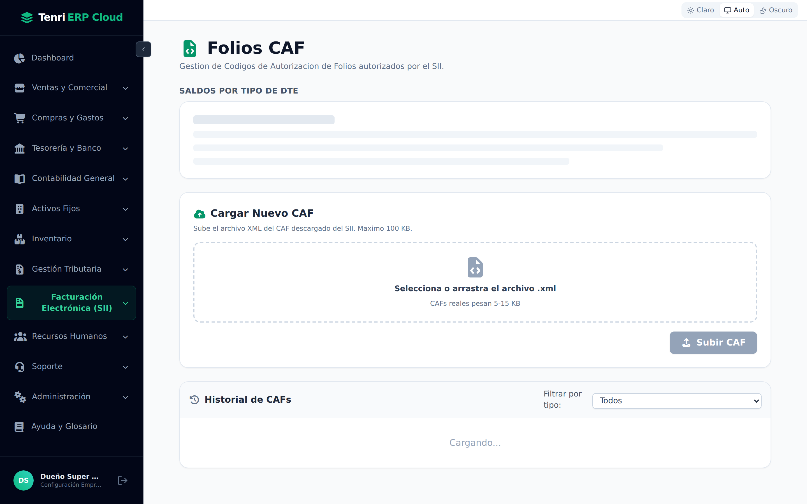
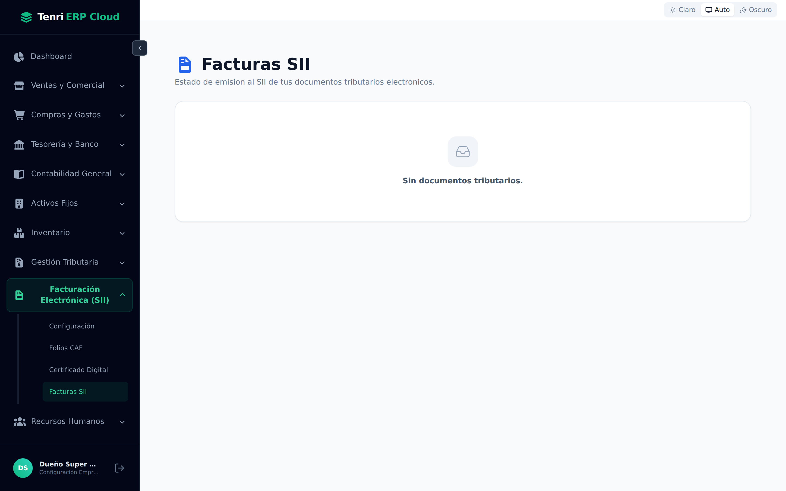

Emita Documentos Tributarios Electrónicos con validez ante el SII: configure el emisor, cargue su certificado digital y sus folios CAF, y siga el estado de cada DTE en tiempo real.

Versión 1.0Documento de usuario
MóduloFacturación Electrónica (SII)
CapturasSistema real en vivo
1 El módulo Facturación Electrónica (SII)
Cuatro pantallas que habilitan la emisión de documentos tributarios electrónicos.
En Chile, toda factura, boleta o nota de crédito debe emitirse como Documento Tributario Electrónico (DTE) y transmitirse al Servicio de Impuestos Internos (SII). Antes de emitir el primer documento, la empresa debe quedar habilitada: registrar sus datos de emisor, firmar con un certificado digital y disponer de folios autorizados (CAF). Este módulo reúne ese proceso en un grupo del menú lateral, Facturación Electrónica (SII), con estas pantallas:
Pantalla
Para qué sirve
Configuración
Los datos del emisor exigidos por el SII y el ambiente de trabajo (certificación o producción).
Certificado Digital
Carga del certificado .pfx / .p12 con el que se firman electrónicamente los DTE.
Folios CAF
Carga de los archivos CAF del SII y control de los saldos de folios por tipo de documento.
Facturas SII
Emisión y seguimiento de cada DTE y su estado frente al SII.
¿Qué es un DTE? Un Documento Tributario Electrónico es la versión digital, firmada y timbrada, de una factura, boleta, nota de crédito, guía de despacho, etc. Reemplaza al documento en papel y tiene el mismo valor tributario, siempre que el SII lo acepte.
2 Configuración del emisor
Los datos que el SII exige para emitir DTE a nombre de su empresa.
La pantalla Configuración SII reúne, en tres bloques, la información obligatoria del emisor. Complete los campos y presione Guardar Configuración.
Campo
Descripción
Giro / Actividad
El giro comercial de la empresa, tal como aparece en su iniciación de actividades.
Código Actividad SII
El código de actividad económica asignado por el SII.
Comuna / Ciudad
Domicilio del emisor que se imprime en el DTE.
RUT Representante Legal
Se valida el dígito verificador del RUT chileno automáticamente.
Número y Fecha de Resolución
La resolución del SII que autoriza a la empresa a emitir DTE.
Email de Intercambio SII
Casilla donde se reciben los acuses y respuestas de intercambio de documentos.
Bloque Datos de Emisión. El RUT del representante legal se valida al escribirlo.
3 Ambiente: certificación y producción
La decisión más importante antes de emitir el primer documento real.
En el bloque Configuración Operacional se elige el Ambiente SII, un campo obligatorio con dos valores:
Ambiente
Cuándo usarlo
Certificación
Pruebas. Los DTE emitidos no tienen valor tributario; sirven para practicar y completar el set de pruebas que el SII exige antes de autorizar a la empresa.
Producción
Real. A partir de este momento cada DTE emitido tiene valor tributario efectivo ante el SII.

Bloques Resolución SII y Configuración Operacional, con el selector de ambiente y el botón Guardar.
Paso a producción irreversible en la práctica. Al cambiar de certificación a producción, el sistema pide una confirmación explícita, porque desde ese instante los documentos afectan de verdad su situación tributaria. Cambie el ambiente solo cuando el SII haya autorizado a la empresa.
4 Certificado Digital
La firma electrónica con la que se sellan los DTE.
Cada DTE debe ir firmado electrónicamente. Para ello se usa un certificado digital emitido por una entidad acreditada por el SII, en formato .pfx o .p12. En la pantalla Certificado Digital SII, mientras no haya certificado cargado verá el estado Sin certificado digital con las instrucciones y la zona de carga.
Estado inicial: sin certificado cargado. Debajo aparece el formulario de subida.
Para cargarlo, complete el formulario:
Archivo .pfx o .p12 — seleccione o arrastre el certificado (máximo 50 KB).
Contraseña del certificado — la clave con que se protege el archivo.
Presione Subir y Validar. El sistema lee el certificado, verifica su vigencia y lo persiste.

Zona de carga del certificado y campo de contraseña, con el botón Subir y Validar.
Seguridad: el certificado y su contraseña se almacenan cifrados con AES-256 y se usan exclusivamente para firmar DTE. La contraseña jamás se guarda en claro.
Una vez cargado, la pantalla muestra una tarjeta con el certificado activo: titular, RUT, emisor, fechas de vigencia y una huella (fingerprint). Un distintivo indica si está vigente o próximo a vencer. Desde ahí puede Reemplazar el certificado (el anterior queda en cuarentena) o Revocarlo.
5 Folios CAF
Los rangos de numeración autorizados por el SII para cada tipo de documento.
Un CAF (Código de Autorización de Folios) es un archivo XML que el SII entrega y que autoriza a la empresa a usar un rango de folios (números correlativos) para un tipo de DTE específico. Sin folios disponibles no se puede emitir: cada documento consume un folio de su CAF. La pantalla Folios CAF tiene tres secciones.
En Saldos por tipo de DTE se controla, para cada tipo de documento, cuántos folios hay en total, cuántos quedan disponibles, cuántos se usaron y cuántos CAF activos existen. Cuando aún no hay folios cargados, la tabla invita a cargar el primer CAF.

Estructura de Folios CAF: saldos por tipo de DTE arriba y el cargador de CAF debajo.
Para incorporar folios, use Cargar Nuevo CAF: seleccione o arrastre el archivo .xml descargado del SII (los CAF reales pesan entre 5 y 15 KB, máximo 100 KB) y presione Subir CAF. El sistema lee el rango de folios, el tipo de DTE y la fecha de autorización, y los deja disponibles para emitir.
6 Historial de CAF y tipos de DTE
Trazabilidad de cada rango de folios cargado.
La sección Historial de CAFs lista todos los CAF cargados, con la posibilidad de filtrar por tipo de documento. Cada fila muestra el rango de folios, el porcentaje de uso, la fecha, el vencimiento y el estado del CAF.
Estado del CAF
Significado
Activo
Con folios disponibles para emitir.
Agotado
Todos sus folios ya se usaron.
Vencido
Superó la fecha límite de uso.
Revocado
Anulado manualmente; no vuelve a emitir.

Historial de CAF con el filtro por tipo de DTE. Un CAF activo puede revocarse desde su fila.
El sistema reconoce los tipos de DTE del SII más habituales, entre ellos:
Código
Tipo de documento
33 / 34
Factura Electrónica / Factura Exenta.
39 / 41
Boleta Electrónica / Boleta Exenta.
52
Guía de Despacho.
56 / 61
Nota de Débito / Nota de Crédito.
110 / 111 / 112
Factura y notas de Exportación.
Folios huérfanos: son folios reservados que, por algún error, no llegaron a emitirse. Por regla del SII no se reutilizan. La columna correspondiente en los saldos le permite detectarlos y controlarlos.
7 Emisión y seguimiento de DTE
El estado de cada documento frente al SII, en tiempo real.
La pantalla Facturas SII concentra el seguimiento de los documentos emitidos. Cada venta que se factura genera su DTE, que se firma con el certificado, consume un folio del CAF y se transmite al SII. Mientras no haya documentos, la pantalla muestra Sin documentos tributarios.

Listado de Facturas SII. En este ejemplo aún no hay DTE emitidos.
Cuando existen documentos, cada fila muestra número, fecha, cliente (razón social y RUT), monto y un distintivo con el Estado SII. El botón Ver detalle despliega un panel con la trazabilidad completa del envío y, si corresponde, la opción de reintentar. Estos son los estados típicos por los que pasa un DTE:
Estado
Qué significa
Pendiente / Enviado
El documento se generó y se transmitió; se espera la respuesta del SII.
Aceptado
El SII validó y aceptó el DTE. Tiene plena validez tributaria.
Reparo / Rechazado
El SII detectó una observación o rechazó el documento; debe revisarse y, en general, reintentar o corregir.
Reintentos: ante un rechazo o un error de comunicación, el panel de detalle ofrece reintentar el envío sin volver a crear el documento, conservando su número de folio y su trazabilidad.
Orden recomendado de puesta en marcha
Para habilitar la facturación electrónica siga esta secuencia: 1) complete la Configuración del emisor y elija el ambiente; 2) cargue el Certificado Digital; 3) incorpore los Folios CAF de cada tipo de documento; y solo entonces 4) comience a emitir y seguir sus DTE desde Facturas SII.
Tenri ERP Cloud
En resumen
Facturación Electrónica (SII) habilita a su empresa para emitir documentos tributarios con validez legal: configura el emisor, firma con certificado digital, controla los folios CAF y sigue el estado de cada DTE.
Emisor y ambiente
Datos del emisor y elección entre certificación (pruebas) y producción (real).
Firma y folios
Certificado digital cifrado con AES-256 y folios CAF autorizados por el SII.
Seguimiento
Estado de cada DTE frente al SII, con detalle y reintento de envío.
Siguiente móduloGestione personas, contratos y remuneraciones de su empresa.